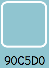
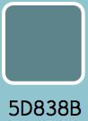
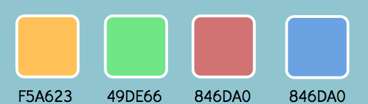

This is the logo
It should not be rotated and should not have drop shadows
It should not be put on top of photography
Icon will be used for social media and can change to celebrate events such as: Saint Patricks Day, Red Nose Day, Christmas and Halloween
The logo and name should only be put on a white or #90C5D0 background
Positioning the logo is either on top of the name as so...
Or the second option is keeping the logo to the left...
What not to do...
The font used for Uncommon knowledge name - Didact Gothic - White
The font used for paragraphs and main text - Days on - #5D838B
Primary colour
Secondary colour
other colours that can be used in the book covers and in app for example...
Book cover colours
Icons can be coloured
Icons can be outlines white and filled white when hovered over